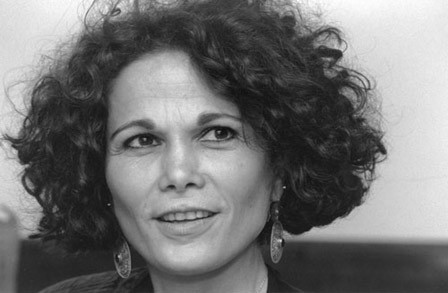

Inspirational Latinas
The latinas that continue to inspire whose stories may be not so well known. Here to inspire the next generation of game changers.
Dolores Huerta

Most everyone has heard the name Cesar Chavez, as one of the prominent leaders in workers rights, but a name less known among the public until more recently is Dolores Huerta.
You likely know the phrase “Si se puede” or the English version used on the 2008 campaign “Yes we can”. Dolores Huerta was the one that came up with that slogan (NPR)
You probably also didn’t know that the successful idea to strike against grapes was Dolores’ idea. Cesar wanted to boycott potatoes instead.(Morado Lens Podcast and Westword)
She was called into action from viewing the poor and unjust working environments farm workers faced. She combatted violence and sexism for her participation in the movement. Dolores’ involvement with the UFW lead to a lifelong commitment to activism and political involvement.
She still works to defend civil rights, speaking across the country with students. She is inspiring in her commitment, and in the obstacles she faced and overcame.
Ellen Ochoa

Ellen Ochoa is currently the Director of NASA's Johnson Space Center, and was the first Hispanic woman in the world to go to space in 1993 to study the Earth's ozone layer.
She also plays the flute and originates from Los Angeles. Her accomplishments include over 900 hours logged in space, valedictorian of both her high school and college, and
she received her Masters and PH.D from Stanford in Electrical Engineering.
Maria Elena Salinas
Her face is recognized amoung many Latinos as she served as a news anchor on the popular TV Network Univision. Some distinguished figures she has interviewed include Jimmy Carter
Bill Clinton, Barack Obama, Gloria Estefan, amoung many others. She is a recipient of the Peabody award (2014), an Emmy Award for Lifetime Achievement, as well as various philanthropic awards
for her dedication to community service.Like Ellen, Maria is also from Los Angeles, her parents origianlly from Mexico.
Julia Alvarez
Her recognized works include In the Time of the Butterflies, Before We Were Free and How the Garcia Girls Lost Their Accent. She has published over 30 books and received the Pura Belpre, Americas Awards, Hispanic Heritage Award and the F. Scott
Fitzgerald Award. Born in New York but raised in the Dominican Republic for part of her life, her works depict the tug between gaining a new identity as an immigrant and longing for a land far away.